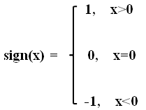

记录机器学习实战中遇到的函数1
import numpy as np
tile()
tile(A, reps)
tile函数的作用是让某个数组或矩阵A，以reps的维度重复，构造出新的数组，所以返回值也是个数组。1
2
3
4a = array([0, 1])
b = np.tile(a, 2)
c = np.tile(a, (2,2))
b,c
(array([0, 1, 0, 1]),
array([[0, 1, 0, 1],
[0, 1, 0, 1]]))
argsort()
1 | x = array([1,4,3,-1,6,9]) |
array([3, 0, 2, 1, 4, 5], dtype=int64)
argsort()函数是将x中的元素从小到大排列，提取其对应的index(索引)，然后输出。例如：x[3]=-1最小，所以y[0]=3,x[5]=9最大，所以y[5]=5。
operator.itemgetter函数
operator模块提供的itemgetter函数用于获取对象的哪些维的数据，参数为一些序号。
要注意，operator.itemgetter函数获取的不是值，而是定义了一个函数，通过该函数作用到对象上才能获取值。
sorted函数用来排序，sorted(iterable[, cmp[, key[, reverse]]])
其中key的参数为一个函数或者lambda函数。所以itemgetter可以用来当key的参数1
2
3
4import operator
a = [1,2,3]
b=operator.itemgetter(1)
b(a)
2
1 | b=operator.itemgetter(1,0) #定义函数b，获取对象的第1个域和第0个的值 |
(2, 1)
1 | students = [('john', 'A', 15), ('jane', 'B', 12), ('dave', 'B', 10)] |
[('dave', 'B', 10), ('jane', 'B', 12), ('john', 'A', 15)]
pickle模块
该pickle模块实现了用于序列化和反序列化Python对象结构的二进制协议。 “Pickling”是将Python对象层次结构转换为字节流的过程， “unpickling”是反向操作，从而将字节流（来自二进制文件或类似字节的对象）转换回对象层次结构。pickle模块对于错误或恶意构造的数据是不安全的。
pickle协议和JSON（JavaScript Object Notation）的区别 ：
1. JSON是一种文本序列化格式（它输出unicode文本，虽然大部分时间它被编码utf-8），而pickle是二进制序列化格式;
2. JSON是人类可读的，而pickle则不是;
3. JSON是可互操作的，并且在Python生态系统之外广泛使用，而pickle是特定于Python的;
默认情况下，JSON只能表示Python内置类型的子集，而不能表示自定义类; pickle可以表示极其庞大的Python类型（其中许多是自动的，通过巧妙地使用Python的内省工具;复杂的案例可以通过实现特定的对象API来解决）。
pickle 数据格式是特定于Python的。它的优点是没有外部标准强加的限制，例如JSON或XDR（不能代表指针共享）; 但是这意味着非Python程序可能无法重建pickled Python对象。
默认情况下，pickle数据格式使用相对紧凑的二进制表示。如果您需要最佳尺寸特征，则可以有效地压缩数据。
模块接口
要序列化对象层次结构，只需调用该dumps()函数即可。同样，要对数据流进行反序列化，请调用该loads()函数。但是，如果您想要更多地控制序列化和反序列化，则可以分别创建一个Pickler或一个Unpickler对象。
pickle模块提供以下常量：
pickle.HIGHEST_PROTOCOL
整数， 可用的最高协议版本。这个值可以作为一个被传递协议的价值函数 dump()和dumps()以及该Pickler 构造函数。
pickle.DEFAULT_PROTOCOL
整数，用于编码的默认协议版本。可能不到HIGHEST_PROTOCOL。目前，默认协议是3，这是为Python 3设计的新协议。
pickle模块提供以下功能，使酸洗过程更加方便：
pickle.dump（obj，file，protocol = None，*，fix_imports = True ）
将obj对象的编码pickle编码表示写入到文件对象中，相当于Pickler(file,protocol).dump(obj)
可供选择的协议参数是一个整数，指定pickler使用的协议版本，支持的协议是0到HIGHEST_PROTOCOL。如果未指定，则默认为DEFAULT_PROTOCOL。如果指定为负数，则选择HIGHEST_PROTOCOL。
文件参数必须具有接受单个字节的参数写方法。因此，它可以是为二进制写入打开的磁盘文件， io.BytesIO实例或满足此接口的任何其他自定义对象。
如果fix_imports为true且protocol小于3，则pickle将尝试将新的Python 3名称映射到Python 2中使用的旧模块名称，以便使用Python 2可读取pickle数据流。
pickle.dumps（obj，protocol = None，*，fix_imports = True ）
将对象的pickled表示作为bytes对象返回，而不是将其写入文件。
参数protocol和fix_imports具有与in中相同的含义 dump()。
pickle.load（file，*，fix_imports = True，encoding =“ASCII”，errors =“strict” ）
从打开的文件对象 文件中读取pickle对象表示，并返回其中指定的重构对象层次结构。这相当于Unpickler(file).load()。
pickle的协议版本是自动检测的，因此不需要协议参数。超过pickle对象的表示的字节将被忽略。
参数文件必须有两个方法，一个采用整数参数的read()方法和一个不需要参数的readline()方法。两种方法都应返回字节。因此，文件可以是为二进制读取而打开的磁盘文件，io.BytesIO对象或满足此接口的任何其他自定义对象。
可选的关键字参数是fix_imports，encoding和errors，用于控制Python 2生成的pickle流的兼容性支持。如果fix_imports为true，则pickle将尝试将旧的Python 2名称映射到Python 3中使用的新名称。编码和 错误告诉pickle如何解码Python 2编码的8位字符串实例; 这些默认分别为’ASCII’和’strict’。该编码可以是“字节”作为字节对象读取这些8位串的实例。使用encoding=’latin1’所需的取储存NumPy的阵列和实例datetime，date并且time被Python 2解码。
pickle.loads（bytes_object，*，fix_imports = True，encoding =“ASCII”，errors =“strict” ）
从bytes对象读取pickle对象层次结构并返回其中指定的重构对象层次结构。
pickle的协议版本是自动检测的，因此不需要协议参数。超过pickle对象的表示的字节将被忽略。1
2
3
4
5
6
7
8
9
10
11
12
13import numpy as np
import pickle
import io
path = 'test'
f = open(path, 'wb')
data = {'a':123, 'b':'ads', 'c':[[1,2],[3,4]]}
pickle.dump(data, f)
f.close()
f1 = open(path, 'rb')
data1 = pickle.load(f1)
print(data1)
{'a': 123, 'b': 'ads', 'c': [[1, 2], [3, 4]]}
feedparser 模块
feedparser是一个Python的Feed解析库，可以处理RSS ，CDF，Atom 。使用它我们可从任何 RSS 或 Atom 订阅源得到标题、链接和文章的条目了。
RSS(Really Simple Syndication,简易信息聚合)是一种描述和同步网站内容的格式你可以认为是一种定制个性化推送信息的服务。它能够解决你漫无目的的浏览网页的问题。它不会过时，信息越是过剩，它的意义也越加彰显。网络中充斥着大量的信息垃圾，每天摄入了太多自己根本不关心的信息。让自己关注的信息主动来找自己，且这些信息都是用户自己所需要的，这就是RSS的意义。
parse() 方法
feedparser 最为核心的函数自然是 parse() 解析 URL 地址的函数。
我们知道，每个RSS和Atom订阅源都包含一个标题（d.feed.title）和一组文章条目(d.entries)
通常每个文章条目都有一段摘要（d.entries[i].summary）,或者是包含了条目中实际文本的描述性标签（d.entries[i].description）1
2
3import feedparser
d=feedparser.parse('http://xvjie.wang/atom.xml')
d.feed # 对应的值也是一个字典
{'title': 'Voidmort',
'title_detail': {'type': 'text/plain',
'language': None,
'base': 'http://xvjie.wang/atom.xml',
'value': 'Voidmort'},
'links': [{'href': 'http://xvjie.wang/atom.xml',
'rel': 'self',
'type': 'application/atom+xml'},
{'href': 'https://xvjie.wang/', 'rel': 'alternate', 'type': 'text/html'}],
'link': 'https://xvjie.wang/',
'updated': '2020-03-15T06:43:28.902Z',
'updated_parsed': time.struct_time(tm_year=2020, tm_mon=3, tm_mday=15, tm_hour=6, tm_min=43, tm_sec=28, tm_wday=6, tm_yday=75, tm_isdst=0),
'id': 'https://xvjie.wang/',
'guidislink': False,
'authors': [{'name': 'Voidmort'}],
'author_detail': {'name': 'Voidmort'},
'author': 'Voidmort',
'generator_detail': {'href': 'http://hexo.io/', 'name': 'Hexo'},
'generator': 'Hexo'}
1 | d['feed']['title'] |
'Voidmort'
1 | d.feed.title #通过属性的方式访问 |
'Voidmort'
1 | d.feed.title_detail |
{'type': 'text/plain',
'language': None,
'base': 'http://xvjie.wang/atom.xml',
'value': 'Voidmort'}
1 | d.feed.link |
'https://xvjie.wang/'
1 | # 该属性类型为列表，表示一组文章的条目 |
[{'title': '机器学习实战（三）',
'title_detail': {'type': 'text/plain',
'language': None,
'base': 'http://xvjie.wang/atom.xml',
'value': '机器学习实战（三）'},
'links': [{'href': 'https://xvjie.wang/2020/03/06/%E6%9C%BA%E5%99%A8%E5%AD%A6%E4%B9%A0%E5%AE%9E%E6%88%98%EF%BC%88%E4%B8%89%EF%BC%89/',
'rel': 'alternate',
'type': 'text/html'}],
'link': 'https://xvjie.wang/2020/03/06/%E6%9C%BA%E5%99%A8%E5%AD%A6%E4%B9%A0%E5%AE%9E%E6%88%98%EF%BC%88%E4%B8%89%EF%BC%89/',
'id': 'https://xvjie.wang/2020/03/06/机器学习实战（三）/',
'guidislink': False,
'published': '2020-03-06T02:15:50.000Z',
'published_parsed': time.struct_time(tm_year=2020, tm_mon=3, tm_mday=6, tm_hour=2, tm_min=15, tm_sec=50, tm_wday=4, tm_yday=66, tm_isdst=0),
'updated': '2020-03-15T06:43:28.902Z',
'updated_parsed': time.struct_time(tm_year=2020, tm_mon=3, tm_mday=15, tm_hour=6, tm_min=43, tm_sec=28, tm_wday=6, tm_yday=75, tm_isdst=0),
'summary': '<h1 id="决策树的简介"><a href="#决策树的简介" class="headerlink"',
'summary_detail': {'type': 'text/html',
'language': None,
'base': 'http://xvjie.wang/atom.xml',
'value': '<h1 id="决策树的简介"><a href="#决策树的简介" class="headerlink"'},
'tags': [{'term': '机器学习实战',
'scheme': 'https://xvjie.wang/categories/%E6%9C%BA%E5%99%A8%E5%AD%A6%E4%B9%A0%E5%AE%9E%E6%88%98/',
'label': None},
{'term': '决策树',
'scheme': 'https://xvjie.wang/tags/%E5%86%B3%E7%AD%96%E6%A0%91/',
'label': None},
{'term': 'ID3', 'scheme': 'https://xvjie.wang/tags/ID3/', 'label': None}]},
{'title': 'Python虚拟环境的搭建',
'title_detail': {'type': 'text/plain',
'language': None,
'base': 'http://xvjie.wang/atom.xml',
'value': 'Python虚拟环境的搭建'},
'links': [{'href': 'https://xvjie.wang/2020/02/19/Python%E8%99%9A%E6%8B%9F%E7%8E%AF%E5%A2%83%E7%9A%84%E6%90%AD%E5%BB%BA/',
'rel': 'alternate',
'type': 'text/html'}],
'link': 'https://xvjie.wang/2020/02/19/Python%E8%99%9A%E6%8B%9F%E7%8E%AF%E5%A2%83%E7%9A%84%E6%90%AD%E5%BB%BA/',
'id': 'https://xvjie.wang/2020/02/19/Python虚拟环境的搭建/',
'guidislink': False,
'published': '2020-02-19T03:03:50.000Z',
'published_parsed': time.struct_time(tm_year=2020, tm_mon=2, tm_mday=19, tm_hour=3, tm_min=3, tm_sec=50, tm_wday=2, tm_yday=50, tm_isdst=0),
'updated': '2020-03-06T09:01:06.144Z',
'updated_parsed': time.struct_time(tm_year=2020, tm_mon=3, tm_mday=6, tm_hour=9, tm_min=1, tm_sec=6, tm_wday=4, tm_yday=66, tm_isdst=0),
'summary': '<p>我使用的Ubuntu18已经自带了pyhon3.6，现在我想用pip安装一些其它的应用的版本和现有的有冲突，为了防止冲突，我需要另一个python环境。</p>\n<h1 id="python的安装"><a href="#python的安装"',
'summary_detail': {'type': 'text/html',
'language': None,
'base': 'http://xvjie.wang/atom.xml',
'value': '<p>我使用的Ubuntu18已经自带了pyhon3.6，现在我想用pip安装一些其它的应用的版本和现有的有冲突，为了防止冲突，我需要另一个python环境。</p>\n<h1 id="python的安装"><a href="#python的安装"'},
'tags': [{'term': 'virtualenv',
'scheme': 'https://xvjie.wang/categories/virtualenv/',
'label': None}]}]
1 | len(d.entries) #一共20篇文章 |
20
1 | [e.title for e in d.entries][:5] #列出前5篇文章的标题 |
['机器学习实战（三）', 'Python虚拟环境的搭建', '机器学习实战（二）', '机器学习实战（一）', 'Django']
1 | d.entries[0].summary #第一篇文章的摘要 和d.entries[0].description功能一样 |
'<h1 id="决策树的简介"><a href="#决策树的简介" class="headerlink"'
sign()
sign()是Python的Numpy中的取数字符号（数字前的正负号）的函数。
1
2
3
4
5
6
7
8
9
10
11
12
13#导入numpy库
import numpy as np
#输入数据
dataArr = [-0.2, -1.1, 0, 2.3, 4.5, 0.0]
print("输入数据为：")
print(dataArr)
#使用numpy的sign(x)函数求输入数据的符号
signResult = np.sign(dataArr)
#打印出sign()的输出结果
print("\n使用sign函数的输出符号为：",signResult)
输入数据为：
[-0.2, -1.1, 0, 2.3, 4.5, 0.0]
使用sign函数的输出符号为： [-1. -1. 0. 1. 1. 0.]
numpy.linalg
numpy.linalg模块包含线性代数的函数。使用这个模块，可以计算逆矩阵、求特征值、解线性方程组以及求解行列式等。
求矩阵的逆
注：矩阵必须是方阵且可逆，否则会抛出LinAlgError异常。1
2
3
4import numpy as np
A = np.mat("0 1 2;1 0 3;4 -3 8")
A
matrix([[ 0, 1, 2],
[ 1, 0, 3],
[ 4, -3, 8]])
1 | # 使用inv函数计算逆矩阵 |
matrix([[-4.5, 7. , -1.5],
[-2. , 4. , -1. ],
[ 1.5, -2. , 0.5]])
1 | # 检查原矩阵和求得的逆矩阵相乘的结果为单位矩阵 |
matrix([[1., 0., 0.],
[0., 1., 0.],
[0., 0., 1.]])
求解线性方程组
numpy.linalg中的函数solve可以求解形如 Ax = b 的线性方程组，其中 A 为矩阵，b 为一维或二维的数组，x 是未知变量1
2
3
4
5
6
7#创建矩阵和数组
B = np.mat("1 -2 1;0 2 -8;-4 5 9")
b = np.array([0,8,-9])
# 调用solve函数求解线性方程
x = np.linalg.solve(B,b)
x
array([29., 16., 3.])
1 | # 使用dot函数检查求得的解是否正确 |
matrix([[ 0., 8., -9.]])
特征值和特征向量
特征值（eigenvalue）即方程 Ax = ax 的根，是一个标量。
其中，A 是一个二维矩阵，x 是一个一维向量。特征向量（eigenvector）是关于特征值的向量
numpy.linalg模块中，eigvals函数可以计算矩阵的特征值，而eig函数可以返回一个包含特征值和对应的特征向量的元组1
2
3
4
5
6# 创建一个矩阵
C = np.mat("3 -2;1 0")
# 调用eigvals函数求解特征值
c0 = np.linalg.eigvals(C)
c0
array([2., 1.])
1 | # 使用eig函数求解特征值和特征向量 |
(array([2., 1.]),
matrix([[0.89442719, 0.70710678],
[0.4472136 , 0.70710678]]))
1 | # 使用dot函数验证求得的解是否正确 |
left: [[1.78885438]
[0.89442719]]
right: [[1.78885438]
[0.89442719]]
left: [[0.70710678]
[0.70710678]]
right: [[0.70710678]
[0.70710678]]
奇异值分解
SVD（Singular Value Decomposition，奇异值分解）是一种因子分解运算，将一个矩阵分解为3个矩阵的乘积
numpy.linalg模块中的svd函数可以对矩阵进行奇异值分解。该函数返回3个矩阵——U、Sigma和V，其中U和V是正交矩阵，Sigma包含输入矩阵的奇异值。1
2
3
4
5# 分解矩阵
D = np.mat("4 11 14;8 7 -2")
# 使用svd函数分解矩阵
U,Sigma,V = np.linalg.svd(D,full_matrices=False)
U, Sigma, V
(matrix([[-0.9486833 , -0.31622777],
[-0.31622777, 0.9486833 ]]),
array([18.97366596, 9.48683298]),
matrix([[-0.33333333, -0.66666667, -0.66666667],
[ 0.66666667, 0.33333333, -0.66666667]]))
结果包含等式中左右两端的两个正交矩阵U和V，以及中间的奇异值矩阵Sigma1
2# 使用diag函数生成完整的奇异值矩阵。将分解出的3个矩阵相乘
U * np.diag(Sigma) * V
matrix([[ 4., 11., 14.],
[ 8., 7., -2.]])
广义逆矩阵
使用numpy.linalg模块中的pinv函数进行求解,
注：inv函数只接受方阵作为输入矩阵，而pinv函数则没有这个限制1
2
3
4
5# 创建一个矩阵
E = np.mat("4 11 14;8 7 -2")
# 使用pinv函数计算广义逆矩阵
pseudoinv = np.linalg.pinv(E)
pseudoinv
matrix([[-0.00555556, 0.07222222],
[ 0.02222222, 0.04444444],
[ 0.05555556, -0.05555556]])
1 | # 将原矩阵和得到的广义逆矩阵相乘 |
matrix([[ 1.00000000e+00, -9.29811783e-16],
[-1.66533454e-16, 1.00000000e+00]])
行列式
numpy.linalg模块中的det函数可以计算矩阵的行列式1
2
3
4# 计算矩阵的行列式
F = np.mat("3.0 4.0;5.0 6.0")
# 使用det函数计算行列式
np.linalg.det(F)
-1.9999999999999971
3×6-4×5=-2 ?1
np.eye((3))
array([[1., 0., 0.],
[0., 1., 0.],
[0., 0., 1.]])
BeautifulSoup
Beautiful Soup 是一个可以从HTML或XML文件中提取数据的Python库.它能够通过你喜欢的转换器实现惯用的文档导航,查找,修改文档的方式.Beautiful Soup会帮你节省数小时甚至数天的工作时间.
https://beautifulsoup.readthedocs.io/zh_CN/v4.4.0/
power()
函数解释：
power(A,B) ：求A的B次方，数学等价于$A^B$
其中A和B既可以是数字(标量),也可以是列表(向量)1
2a , b = 3, 4
np.power(a, b)
81
1 | A, B = [1, 2, 3], 3 |
array([ 1, 8, 27], dtype=int32)
A B都是列表(向量)时候，必须len(A)=len(B)1
2A, B = [1, 2, 3], [4, 5, 6]
np.power(A, B)
array([ 1, 32, 729], dtype=int32)
nonzero()
nonzero(a)
nonzero函数是numpy中用于得到数组array中非零元素的位置（数组索引）的函数。它的返回值是一个长度为a.ndim(数组a的轴数)的元组，元组的每个元素都是一个整数数组，其值为非零元素的下标在对应轴上的值。
（1）只有a中非零元素才会有索引值，那些零值元素没有索引值；
（2）返回的索引值数组是一个2维tuple数组，该tuple数组中包含一维的array数组。其中，一维array向量的个数与a的维数是一致的。
（3）索引值数组的每一个array均是从一个维度上来描述其索引值。比如，如果a是一个二维数组，则索引值数组有两个array，第一个array从行维度来描述索引值；第二个array从列维度来描述索引值。
（4）transpose(np.nonzero(x))函数能够描述出每一个非零元素在不同维度的索引值。
（5）通过a[nonzero(a)]得到所有a中的非零值
a是一维数组
1 | import numpy as np |
(array([1, 2], dtype=int64),)
1 | np.array(b).ndim |
2
a是二维数组
1 | a = np.array([[0,0,3],[0,0,0],[0,0,9]]) |
(array([[0, 0, 3],
[0, 0, 0],
[0, 0, 9]]),
(array([0, 2], dtype=int64), array([2, 2], dtype=int64)))
1 | np.array(b).ndim |
2
1 | np.transpose(np.nonzero(a)) |
array([[0, 2],
[2, 2]], dtype=int64)
frozenset()
描述
frozenset() 返回一个冻结的集合，冻结后集合不能再添加或删除任何元素。
语法
frozenset() 函数语法：
class frozenset([iterable])
参数
iterable – 可迭代的对象，比如列表、字典、元组等等。
返回值
返回新的 frozenset 对象，如果不提供任何参数，默认会生成空集合。
实例
以下实例展示了 frozenset() 的使用方法：1
2a = frozenset(range(10)) # 生成一个新的不可变集合
a
frozenset({0, 1, 2, 3, 4, 5, 6, 7, 8, 9})
1 | b = frozenset('voidmort') |
frozenset({'d', 'i', 'm', 'o', 'r', 't', 'v'})
apriori 关联分析
1 | %pip install efficient-apriori |
Downloading https://files.pythonhosted.org/packages/5a/c6/ecdf3a32d23cada466634c649cf4f50fefe76f56eae53ecceff688b306be/efficient_apriori-1.1.1-py3-none-any.whl
Installing collected packages: efficient-apriori
Successfully installed efficient-apriori-1.1.1
1 | from efficient_apriori import apriori |
[{eggs} -> {bacon}, {soup} -> {bacon}]
NumPy-corrcoef()
numpy.corrcoef(x, y=None, rowvar=True, bias=
返回皮尔逊积矩相关系数。
相关系数矩阵之间的关系，
返回值r介于-1和1之间（含1）。r=0,没有相关性。
参数:
x : array_like
包含多个变量和观测值的一维或二维数组。每行 x 表示一个变量，每列都是对所有这些变量的单个观察。也看到 rowvar 下面。
y : 阵列式，可选
一组附加的变量和观察值。 y 形状与 x .
罗瓦尔 : 可选的布尔
如果 rowvar 为真（默认值），则每行代表一个变量，列中包含观测值。否则，关系将被转置：每列表示一个变量，而行包含观测值。
返回:
R : 变量的相关系数矩阵。
1 | import numpy as np |
0.9999999999999999
1 | np.corrcoef(a, b) |
array([[1., 1.],
[1., 1.]])